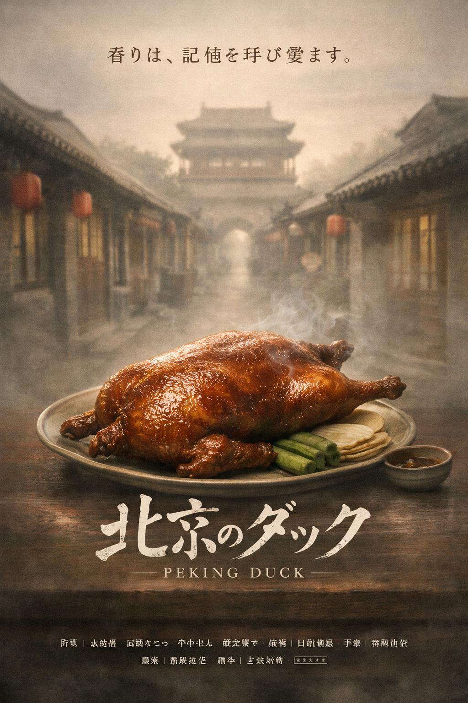
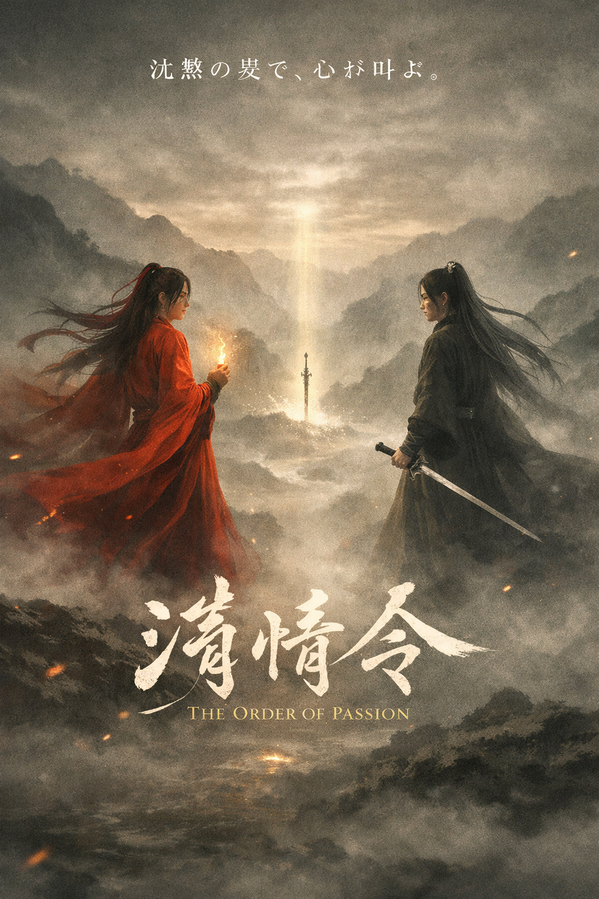
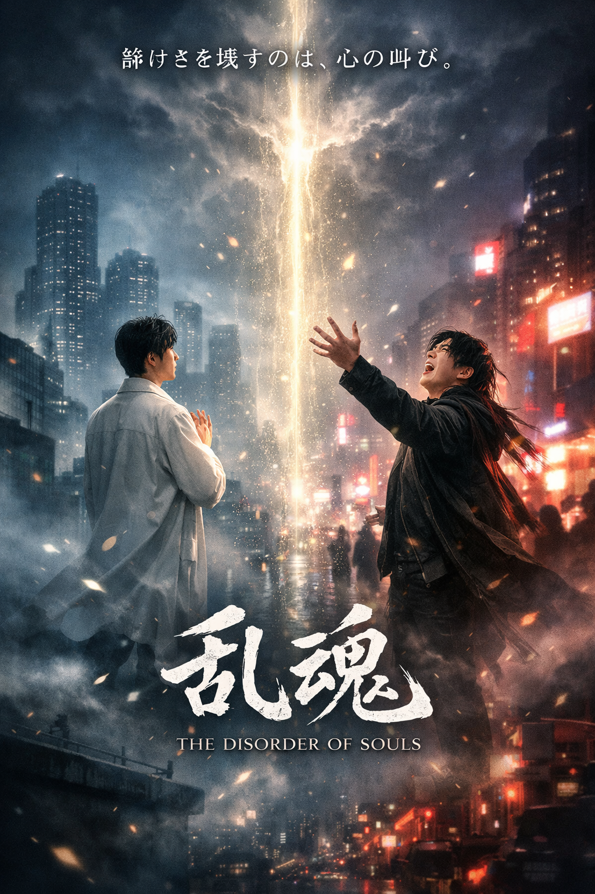

中国ドラマの魅力を一緒に楽しもう
名作から最新作まで、ドラマを通して中国文化に触れる交流サークル
目的
中国ドラマの鑑賞を通して、中国の文化・歴史・価値観への理解を深めることを目的としています。 また、ドラマについて感想を語り合うことで、学年や学部を超えた交流の場を作り、 メンバー同士の親睦を深めます。
活動内容
- 週1回のドラマ鑑賞会
- 作品についての感想交流
- 中国文化に関するミニ勉強会
- おすすめ作品の紹介イベント
- 長期休暇中の特別上映会
上映作品

北京のダック
北京の胡同で暮らす料理人と詩人。 一皿のダックが、失われた記憶と愛を呼び覚ます。 ――食の香りが、過去と心をつなぐ物語。

激情令
山頂で出会った二人の男。 抑えきれない激情が、世界の均衡を揺るがす物語。
真珠の君
古代宮廷に生きる詩人の青年。 一粒の真珠が、失われた愛と記憶を呼び覚ます幻想劇。
名を持つことに追われる男。 光と影の狭間で、存在の重さと孤独に向き合うサスペンス。

乱魂
現代都市の夜、乱れた魂が光の裂け目に引き寄せられる。 静けさと混沌が交差する都市霊譚。
巨大な「？」に翻弄される男。 考えすぎて疲れる日常を描くコミカルな哲学コメディ。
入会案内
中国ドラマが好きな方はもちろん、これから見てみたいという初心者も大歓迎です。 学年・学部を問わず参加できます。
活動日：毎週金曜日 18:00〜20:00
活動場所：学生会館3階 視聴覚室
会費：無料
FAQ
Q. 中国語が分からなくても参加できますか？
A. はい。日本語字幕付きで鑑賞するので問題ありません。
Q. 途中参加は可能ですか？
A. いつでも参加できます。見学のみも歓迎です。
Q. 中国ドラマ初心者でも大丈夫ですか？
A. 大歓迎です。初心者向けの作品も多数上映しています。